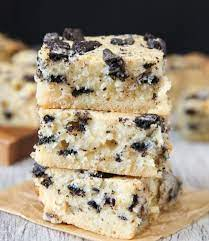

Cookies and Cream Brownies Recipes

Description
This delicious CookiesNCream brownie recipe is they perfect desert for every occasion
The soft and creamy goodnes of a desert which only takes 1hr 30 to make, will leave you asking for seconds enjoying every bite!
Ingredients
1 1/2 cups of white sugar
3/4 cup of all-pupose flour
1/2 cup of high-quality unsweetned cocoa powder
3/4 cupp unsalted butter, melted
1 teaspoon vanilla extract
32 choclate sandwhich cookies (Perfered Oreo)divided
1(8 ounce) container frozen whipped topping (such as Cool whip) thawed